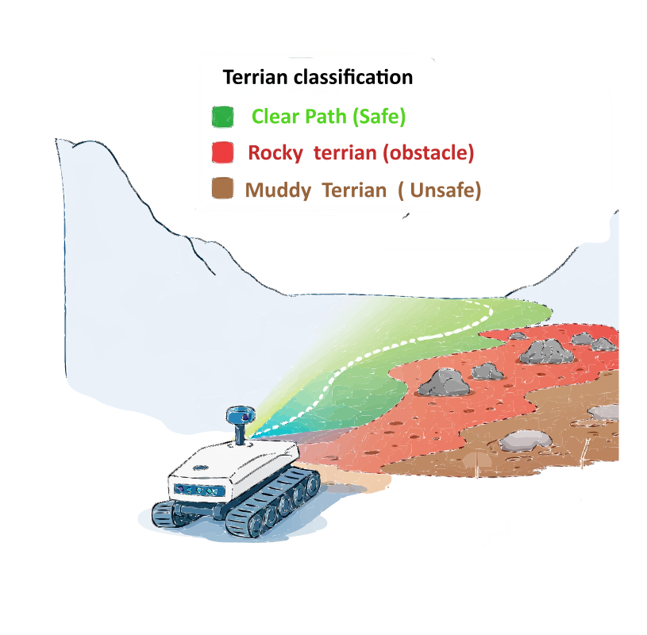
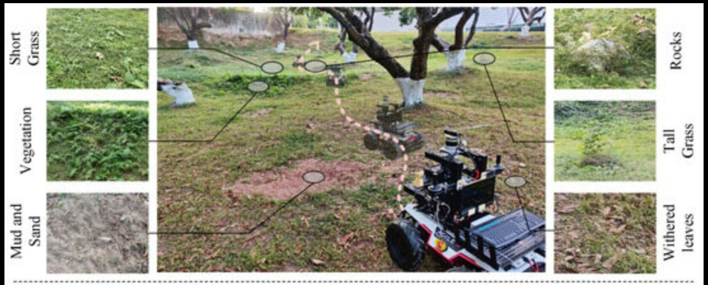
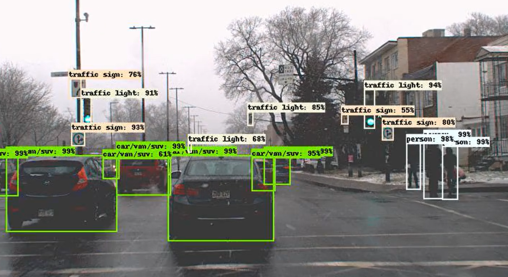
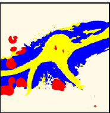
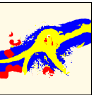
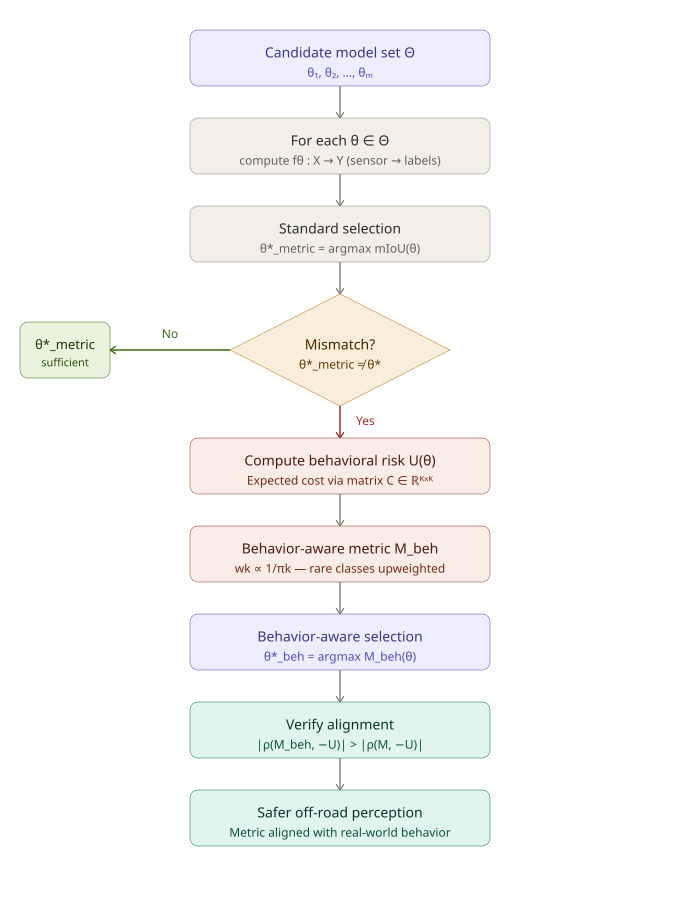
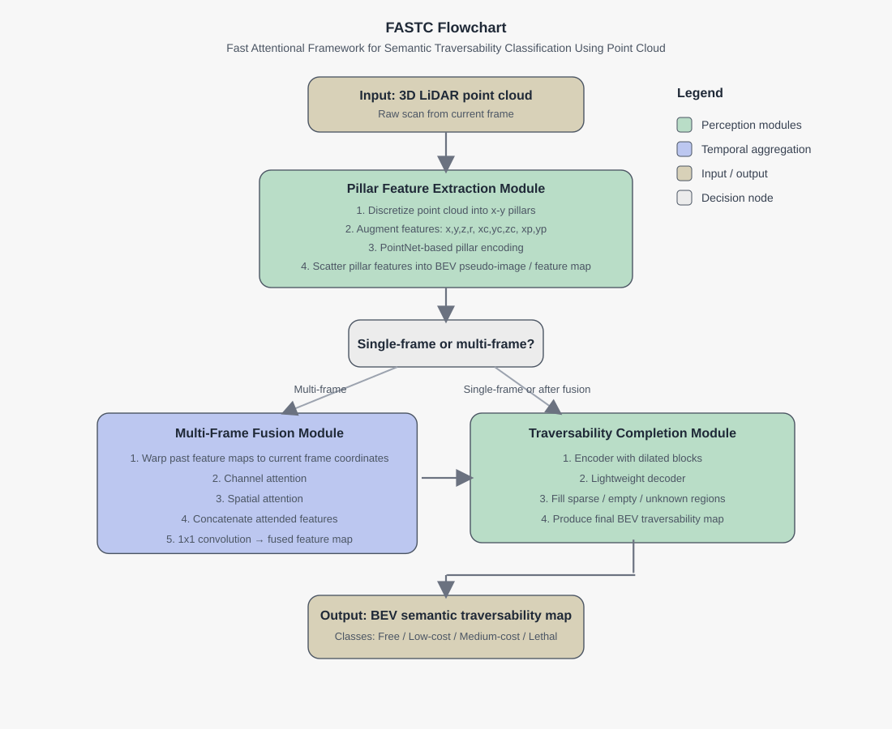
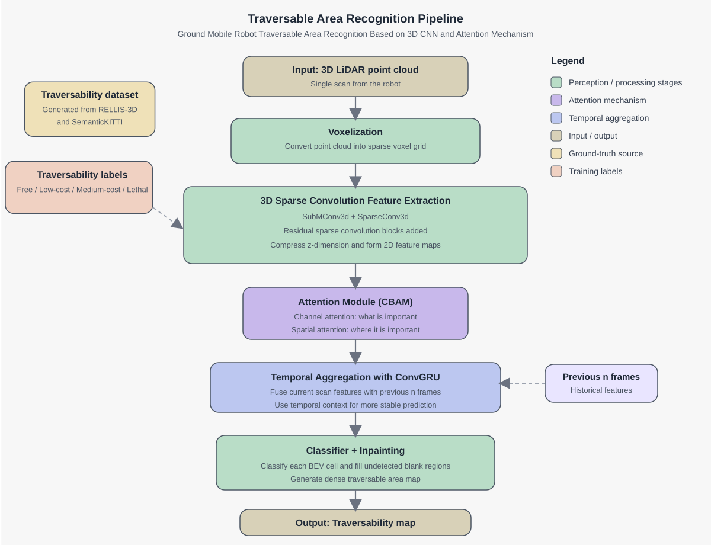

Traversible terrain maps in unstructured environments for autonomous vehicles

Problem Statement
Given sensor data, determine whether the terrain is traversable and, if so, estimate the least-cost path through it
We are trying to answer Is this terrain traversible or not. And if it is what is the least cost area?
How do we answer this question? A general approach is to learn traversability from data, using supervised or self-supervised learning, and then build a cost map for planning. In this proposal, we follow the supervised approach and generate a cost map.
Off-road autonomy is fundamentally safety-critical
Off-road environments are unstructured, imbalanced, and operationally harsh.
Rare terrain classes such as mud, puddles, water, holes, and rocks may dominate failure risk.
Standard perception metrics can hide dangerous behavior on these rare classes.
Therefore, a model with higher mIoU is not necessarily the safer model.
Core motivation: Is to know whether an area is traversible or not.
Unstructured Enviornment

Unstructured environment.Zhang, Bo, et al. “Autonomous vehicles traversability mapping fusing semantic–geometric in off-road navigation.” Drones 8.9 (2024): 496.
Structured Enviornment

Zhang, Bo, et al. “Autonomous vehicles traversability mapping fusing semantic–geometric in off-road navigation.” Drones 8.9 (2024): 496.
\(P_{ij}(\theta)\) is the conditional confusion probability.
Why
Why this should be interesting from an optimization and intelligent-systems perspective
This work can be interpreted as:
a design-space exploration problem for FASTC, where performance is studied under different attention mechanisms, activation functions, and optimization strategies
an input-resolution sensitivity problem for RAC-BEVNet, where the effect of image size on model accuracy and robustness is evaluated
a comparative algorithm-refinement problem, with the objective of improving traversability-classification performance relative to baseline models
an optimization-driven perception problem, where model choices are assessed using standard evaluation metrics such as mIoU
Candidate LiDAR architectures
LiDAR-based models to be studied and improved
1. FASTC-style architecture
attentional framework for semantic traversability classification,
efficient feature extraction from point clouds,
opportunity to refine attention and fusion design.
2. BEVNet-style architecture with sparse 3D convolution
voxelization and sparse 3D feature extraction,
residual modules,
attention mechanisms,
temporal aggregation for BEV traversability recognition. These are not treated as fixed baselines only; they are candidate backbones for improvement.
Why LiDAR in this proposal
Why prioritize LiDAR for the main implementation
LiDAR provides terrain geometry and obstacle structure directly.
It supports traversability reasoning in unstructured environments.
It is well suited for BEV hazard representation.
It provides a strong base before extending to multimodal fusion.
Important clarification
The framework itself remains conceptually flexible and can later support RGB, semantic, geometric, or hybrid sensing pipelines.
Preliminary evidence
Initial results already support the hypothesis
Your preliminary study suggests:
severe class imbalance in RELLIS-3D,
hazardous classes receive very low representation,
standard mIoU can rank models differently from behavior-aware criteria,
\(M_{beh}\) and \(U(\theta)\) better reflect safety-relevant performance.
Expected contributions
Technical contributions
Quantitative mismatch analysis between mIoU and behavioral risk
Behavior-aware evaluation metric(s) such as weighted IoU variants
Improved LiDAR-based models based on FASTC-style and BEVNet-style designs
Perception-to-hazard-to-heading pipeline for end-to-end validation
Work plan
Proposed timeline
Period
Activities
Months 1–1
Preprocessing, baseline setup
Months 2–3
Train candidate models, compute IoU and mIoU, identify failure cases
Implement a behavior-aware evaluation framework for off-road terrain perception in order to assess model performance beyond standard metrics such as IoU and mIoU, with particular emphasis on safety-relevant errors and downstream hazard interpretation.
Investigate and modify a FASTC-style LiDAR traversability architecture, with a focus on improving its attention mechanism and related components, in order to achieve stronger terrain classification performance than the published baseline.
Investigate and modify a BEVNet-style LiDAR traversability architecture based on 3D sparse convolution, residual modules, and attention mechanisms, in order to achieve better traversable area recognition performance than the published method.
Takeaway
Closing message
This proposal shifts off-road terrain perception from:
accuracy-only evaluation
into:
risk-aware, behavior-aligned model selection.
Final one-sentence pitch
The proposed work studies how to improve LiDAR-based terrain perception models and how to evaluate them using a decision-theoretic criterion that better supports safe autonomous behavior in off-road environments.
Qualitative comparison
Qualitative comparison
View:


BEVNet
RAC-BEVNet
Free
Low-cost
Medium-cost
Lethal
Confusion Matrices
Normalized confusion matrices. Axis labels are class ids:
0 free · 1 low-cost ·
2 medium-cost · 3 lethal
RAC-BEVNet
Predicted
0
1
2
3
Actual
0
1
2
3
Hover a cell to see details.
BEVNet
Predicted
0
1
2
3
Actual
0
1
2
3
Hover a cell to see details.
Results from latest literature
Paper
Method
RELLIS-3D mIoU
FASTC
FASTC-S
61.7%
FASTC
FASTC-M
68.6%
RAC-BEVNet
Proposed method
66.2%
BEVnet Timeline
2015
Long, Shelhamer, Darrell — FCN
Fully Convolutional Networks — core backbone for pixelwise semantic segmentation.
2015
Noh, Hong, Han — DeconvNet
Encoder-decoder with deconvolution — key architecture reference alongside FCN.
2015
Badrinarayanan et al. — SegNet
Encoder-decoder segmentation with pooling indices — frames the model design space.
2016
Valada et al. — DeepScene
Multispectral off-road scene understanding — main comparison baseline and benchmark dataset.
2017
Maturana et al.
Early off-road semantic mapping — fused image segmentation with LiDAR into a 2.5D traversability map.
2017
Xiang & Fox
Recurrent semantic mapping — temporal recurrence for consistent scene understanding over time.
2020
Scene Completion
Unseen-space prediction — handling occluded regions with sparse LiDAR coverage.
2020
Lift, Splat, Shoot
End-to-end BEV prediction from images — established the lift-splat paradigm used in BEVNet.
Summary:Fully Convolutional Networks for Semantic Segmentation introduced end-to-end pixelwise prediction by replacing fully-connected layers with convolutional ones, enabling dense labelling at arbitrary resolution.
Role in review:The single most important dependency — the paper explicitly bases its custom CNN on FCNs and uses this as the core idea for pixelwise semantic segmentation.
FASTC
FASTC — Key Prior Work
2017
PointNet
Per-point MLP + max pooling on raw point sets — encoder used inside each pillar.
Semantic terrain cost-map from LiDAR — FASTC's direct predecessor and task blueprint.
2017
PointNet — Deep Learning on Point Sets for 3D Classification and Segmentation
Summary:Processes raw point clouds directly as unordered sets without voxelization using a shared MLP per point followed by symmetric max pooling, making the network permutation-invariant, simple, and easy to embed in larger systems.
Why it matters for FASTC:FASTC uses a simplified PointNet inside each pillar to learn point-level features before forming the BEV pseudo-image. PointPillars provides the pillarization concept; PointNet provides the actual per-pillar point-feature encoder.
Behavior-Aware Evaluation Framework
Behavior-Aware Evaluation Framework - Key Prior Work
2001
Elkan - Cost-Sensitive Learning
Decision-theoretic classification with asymmetric error costs.
2021
STEP
CVaR-based traversability evaluation for risk-aware off-road navigation.
2022
Risk-Aware Costmaps
Learning tail-risk-aware traversability costmaps from data.
2022
Learned Speed Distribution Map
Learned distributions transformed into risk-aware navigation costs.
2023
Metric Limitations Under Imbalance
Fine-grained and worst-case segmentation metrics beyond standard mIoU.
2024
EVORA
Evidential uncertainty and risk-aware traversability learning.
2026
This Work
Behavior-aware model selection for off-road perception under asymmetric risk.
2001
Elkan - The Foundations of Cost-Sensitive Learning
Summary:Established the decision-theoretic basis for classification under asymmetric misclassification penalties, showing that evaluation and selection should depend on the cost of mistakes rather than accuracy alone.
Role in review:This is the theoretical foundation for your misclassification cost matrix C and the idea that false-safe and false-hazard errors should not be treated equally.
Risk-Aware Flowchart

Fast Attentional Framework for Semantic Traversability Classification Using Point Cloud (FASTC)

RAC-BEVNet = Residual-Attention-ConvGRU BEVNet

Path Planning
Interactive slide showing the obstacle layout and feasible path from start to goal.
Traversability Interactive
Interactive slide for exploring traversability classes, numeric costs, and preferred path choices.